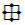

| Prev | Up | Next |

Regardless of whether you choose to probe with a point or a line, you need to select the coordinates of points in your data set. To select a point, you can either type the coordinates into the user interface or select the point interactively using the 3D cursor . If it is not already selected, click the 3D cursor button on the interactor toolbar to display the 3D cursor. The 3D cursor consists of a bounding box of the current data set, a 3D axis, and spheres at the intersection of the axis and the faces of the bounding box. To select a point using the 3D cursor, move the mouse over one of these spheres (which will cause the sphere to turn red). Then click on the sphere and drag it to select a new point. If you wish to move a sphere on a face that is not currently visible, select another of the interactors from the toolbar (most likely the one for rotation) and change the view so that the desired face is visible. Then select the 3D cursor interactor again to continue choosing a point.
If you choose to probe with a point, then you must select which point in the data to display information about.

If you are probing with a line, you need to select the endpoints of the line within the data set along which to collect information. Choose an endpoint from the "Select End Point" menu to select coordinates for, and then choose the position of the endpoint. If you are using a line, you can also specify the number of subdivisions you wish to break the line into. The number of subdivisions determines the number of points used in probing.